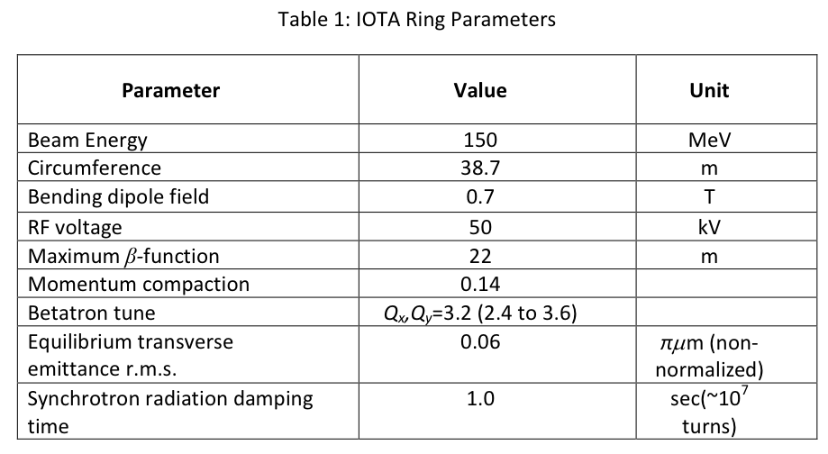

Notes on IOTA proton project
(last updated December 6, 2016 by Eric Prebys)
Table of Contents
Basic Parameters

Additional and calculated parameters
- New beta functions: 10-20m
- Beam size @beta=10m (RMS): 4.5mm
Ion Source Information
Beam Line Components
- There are three old Main Ring trim quads (MQT) magnets on the girder
- L=12 in
- Gradient = 8 kG/m
- Buncher cavity conceptual design document.
Beam Line Design
From Sergey Antipov
Synergia Simulation
The Synergia package has been installed on
my computer under the Fermilab Scientific Linux virtual machine.
The Synergia manual can be found here and the Wiki can be found here.
IOTA Simulation files
Running in parallel on the Wilson cluster
- Get an account on Wilson (tev.fnal.gov)
- Install a personal copy of Synergia, as described above
- Rework the .py files into separate iota_workflow.py and iota_workflow_options.py files. The latter should include the "Job_manager" line at the end
- copy
the file
synergia2-devel/build/synergia2/synergia-script-templates/job_example_wilson
into the directory and rename it "job" and the file
synergia2-devel/build/synergias/synergia-script-templates/resume_exampe_wilson
and name it "resumejob".
- Copy synergia2-devel/build/synergia2/synergia-script-templates/local_opts_wilson_example.py
into your directory and rename it "local_opts.py"
- Edit the file and replace the "override.setupsh" definition with the full path to your synergia-script-templates/setup.sh file.
- do synergia iota_workflow.py createjob=True [options]. This
will build the "run.00" directory, containing the "run.00_job" batch
file for Wilson
- Enter the new directory and submit job with "qsub run.00_job".
Talks and Write-ups
- Talk given at ASTA User's Meeting, June 9, 2014 (PowerPoint)
- Synergia status talk at bi-weekly IOTA meeting, September 18, 2014 (PowerPoint)
- Discussion of HINS relocation issues at bi-weekly IOTA meeting, October 2, 2014 (PowerPoint)
Background Information and References
{kind=link}
{kind=link}
{kind=link}